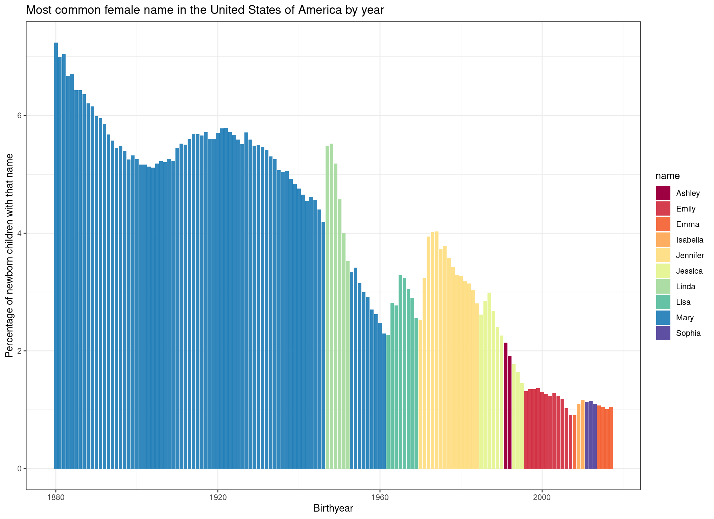

install.packages("tidyverse")The Big Picture
Now that we have completed our set up, let’s dive right into programming with R. In this chapter, we will go through a “mini-project” with very basic data, which follows a possible workflow when working with data in R. We will install and load packages, load data, perform some operations on this data, calculate some summary statistics and plot them. In later chapters we will go into a little more detail for each topic, so don’t worry if you don’t understand something quite yet, it will be covered again. This chapter will simply give you an idea of what is possible in R, before we deal with the specifics.
Packages
Packages are extensions to the base R you get by default. Let’s install a package collection that makes it easier to work with data in R:
The tidyverse is a collection of packages following a common philosophy, and facilitating many aspects of coding in R. We will use functions from base R and from the tidyverse. However, as I personally find them a bit more intuitive in many cases, we will use tidyverse functions a lot in the current chapter, so you can quickly get an insight into what is possible with R.
# tidyverse code will be marked like this.Just by installing the packages, we can’t use them. We also have to load them into our R session:
library(tidyverse)── Attaching core tidyverse packages ──────────────────────── tidyverse 2.0.0 ──
✔ dplyr 1.1.4 ✔ readr 2.1.5
✔ forcats 1.0.0 ✔ stringr 1.5.1
✔ ggplot2 3.5.1 ✔ tibble 3.2.1
✔ lubridate 1.9.3 ✔ tidyr 1.3.1
✔ purrr 1.0.2
── Conflicts ────────────────────────────────────────── tidyverse_conflicts() ──
✖ dplyr::filter() masks stats::filter()
✖ dplyr::lag() masks stats::lag()
ℹ Use the conflicted package (<http://conflicted.r-lib.org/>) to force all conflicts to become errorsLoad Data
Data is loaded into R so you can work with it. For this chapter, we are going to use the data set babynames, which we can find on the tidytuesday site. I have already tweaked the data set a bit, so download it from here to follow along (in case you haven’t already in the previous exercise.
So, after downloading it and saving it in the folder raw_data within my project directory, I can load the data set into R with:
babynames <- read.csv("./raw_data/babynames.csv")This will load the data into R and assigning it the name babynames by using the <- operator. You can see the data popping up in your Environment pane on the upper right. Note that the file path might differ on your device, depending on where you’ve saved your data.
Take a look
Now that we have our data loaded safely into R, we can get an overview with a multitude of commands. One of the most important ones might be head(), which will give us the first few rows of the data:
head(babynames) year sex name ID
1 1880 F Mary 1
2 1880 F Anna 2
3 1880 F Emma 3
4 NA F Elizabeth 4
5 1880 F Minnie 5
6 1880 F Margaret 6Especially for bigger data sets, it might be more feasible to only look at the structure and not the whole data set:
str(babynames)'data.frame': 1924665 obs. of 4 variables:
$ year: int 1880 1880 1880 NA 1880 1880 1880 1880 1880 1880 ...
$ sex : chr "F" "F" "F" "F" ...
$ name: chr "Mary" "Anna" "Emma" "Elizabeth" ...
$ ID : int 1 2 3 4 5 6 7 8 9 10 ...On the left we can see the columns of this data, named year, sex, names, and ID. On the right we see the first values in each column, for example 1880, 1880, 1880, NA etc … in the year-column.
So, what we can infer from the data and its online description is that it contains the most common names for boys and girls in the USA for each year since 1880.
Merging
Sadly the data is not complete. If we had the number of people born with a specific name for every year, we could find out which name was the most common each year (which is our goal, as you might remember). However, the number of people is missing from our data (ok, i split it up for illustrative purposes). So let’s download babynames_n.csv (in case you haven’t already) and load it into R:
babynames_n <- read.csv("./raw_data/babynames_n.csv")Now we can merge it with our other data set by the ID column:
babynames_merged <- merge(babynames,
babynames_n,
by = "ID")
head(babynames_merged) ID year sex name n prop
1 1 1880 F Mary 7065 0.07238359
2 2 1880 F Anna 2604 0.02667896
3 3 1880 F Emma 2003 0.02052149
4 4 NA F Elizabeth 1939 0.01986579
5 5 1880 F Minnie 1746 0.01788843
6 6 1880 F Margaret 1578 0.01616720Great, now we can see the number of people born with that name in each year since 1880, and the propability that they get this specific name, calculated from the total of births in this year! But hold on! The column years seems to include missing values (NA's). It is always a good idea to at least think about the missing values before doing any analyses, so let’s do just that:
Missings
There are multiple ways to deal with missing values. For reasons of simplicity, we will just remove any rows that contain NA's. We can achieve that very easily using the function na.omit():
babynames_merged <- na.omit(babynames_merged)
head(babynames_merged) ID year sex name n prop
1 1 1880 F Mary 7065 0.07238359
2 2 1880 F Anna 2604 0.02667896
3 3 1880 F Emma 2003 0.02052149
5 5 1880 F Minnie 1746 0.01788843
6 6 1880 F Margaret 1578 0.01616720
7 7 1880 F Ida 1472 0.01508119Subsetting data
One very important part of working with data in R is the subsetting of data. This means we select specific values from a data set. Let’s suppose we want to only look at the female names in this data set:
babynames_F <- babynames_merged %>%
filter(sex == "F")Wondering what the %>% means? That’s a pipe operator, which is used, mainly in the tidyverse, to connect multiple function calls. This can make code a lot more readable. Here we start with the babynames_merged data set and then perform an operation on it, in this case filtering specific values.
Adding a new column
Now, we want to plot the percentages of each name instead of the probability, because it looks a bit more intuitive (in my opinion). So, let’s build a new column named percentage, which is just the prop column multiplied by 100:
babynames_F$percentage <- babynames_F$prop * 100
head(babynames_F) ID year sex name n prop percentage
1 1 1880 F Mary 7065 0.07238359 7.238359
2 2 1880 F Anna 2604 0.02667896 2.667896
3 3 1880 F Emma 2003 0.02052149 2.052149
4 5 1880 F Minnie 1746 0.01788843 1.788843
5 6 1880 F Margaret 1578 0.01616720 1.616720
6 7 1880 F Ida 1472 0.01508119 1.508119Selecting columns
Now we can trim down our data set a bit more and select only the columns we are actually going to need:
babynames_F <- babynames_F %>%
select(year, name, percentage) # We take the percentage instead of the prop here, because i find it a little bit more intuitive to plot.
head(babynames_F) year name percentage
1 1880 Mary 7.238359
2 1880 Anna 2.667896
3 1880 Emma 2.052149
4 1880 Minnie 1.788843
5 1880 Margaret 1.616720
6 1880 Ida 1.508119Some additional summary statistics
Now, the next part can show you how easy it can be to deal with data in R. It’s tidyverse specific syntax, so don’t worry about it to much for now.
First, let’s group our data according to year:
babynames_F_grouped <- group_by(babynames_F, year)Any operations we now perform are performed by year, and not on the whole data set at once. In our case, we want to find the most common name each year, which is the name with the maximum percentage. With slice_max(percentage) we can extract the row with the highest percentage in each group:
babynames_F_max <- babynames_F_grouped %>%
slice_max(percentage)
head(babynames_F_max)# A tibble: 6 × 3
# Groups: year [6]
year name percentage
<int> <chr> <dbl>
1 1880 Mary 7.24
2 1881 Mary 7.00
3 1882 Mary 7.04
4 1883 Mary 6.67
5 1884 Mary 6.70
6 1885 Mary 6.43Now our data contains only the most common name for each year. For 1880 that’s Mary, with 7.24 of newborns named that way.
At the moment we only want to get an idea what R can do, so don’t hold up if some of the functions are not that clear to you right now, hopefully that will change throughout this tutorial.
Plot the data
We will use the package ggplot2 (which is also part of the tidyverse) for plotting our data. It should be mentioned that Base R also has some powerful plotting functions, however, ggplot2 makes it very easy to build complex and beautiful plots.
A ggplot is constructed from multiple layers that can be laid over each other using the + operator.
We start with the function ggplot(), in which we define our data and the x and y axes. This will draw our (empty) coordinate system. We have to use the aes() (aesthetics) function for everything that changes in relation to the data. For example, the exact location of each element in the plot is dependent on the x and y position deposited in the data, so we have to specify our axes inside the aes() function:
p <- ggplot(
data = babynames_F_max,
aes(
x = year,
y = percentage)
)
pNow that we have defined our aesthetics, we can add a geom-layer. This will make use of the data we have defined in ggplot() and plot some bars for us:
p +
geom_col()We can also define different colors for different groups. For example, if we want the bars to get filled with a color corresponding to the name they are representing, we can do that:
p <- p +
geom_col(aes(fill = name))
pIf we wanted all bars to have the same color, we would have specified the fill argument outside of the aes() function, because in that case, it wouldn’t have to change in dependence of our data. We could also have defined our fill argument in the aes() function we have defined in ggplot(). In that case, it would have influenced all geom_() functions. Because we defined it in geom_col(), it only influences this geom_col() call.
Let’s give the axes some more informative names and a title to the plot:
p <- p +
ggtitle("Most common female name in the United States of America by year") +
xlab("Birthyear") +
ylab("Percentage of newborn children with that name")
pFinally, to style the plot a bit, let’s add a predefined theme and a color palette:
p +
theme_bw() + # Theme
scale_fill_brewer(palette = "Spectral") # Color palette
We would have many more options to style this plot further (for example we could sort the names in the legend by order of appearance), but let’s keep it at that for now.
Conclusion
In this tutorial we have learned that R is a flexible tool for editing and plotting data. Of course, we barely scratched the surface. Therefore, we want to dive a bit deeper into each step. If you already have some R experience, you can now move on to the Final Exercise to identify topics your want to work on. If you are a R beginner, I would suggest you follow the course, as outlined on the left.